O papel do professor no Sistema de Recomendação no SAE está relacionado ao cadastramento de mídias e conteúdos relevantes e confiáveis que sejam de grande importância para o conhecimento dos alunos. No caso do SAE, esses conteúdos são denominados Materiais que, com a interação do professor com o sistema, ajudarão os estudantes sendo um recurso complementar à aprendizagem na disciplina.
Figura 1 - Materiais recomendados.
O recurso de cadastramento de Materiais é fornecido
exclusivamente ao professor, onde ele deve registrá-los respeitando
os Dados do Material que são eles: Disciplina,
Conteúdo, Material, Tipo e o Link/URL. O Sistema de
Recomendação do SAE permite algumas ações
que estão relacionadas ao professor, onde é possível:
Cadastrar Material: Consiste em subir os
conteúdos que serão recomendados aos
alunos, podendo ser do tipo Livro, Video, Site, Fórum,
Chat, Enciclopédia Eletrônica, Blog, Anais de
Evento, Revista Eletrônica, Tutoriais, Ambiente de Pesquisa,
Ambiente Institucional, Ambiente de Conteúdos, Ambiente de
Conteúdos Específicos, Ambiente com Exemplos, Jogo Educacional,
Rede Social ou Outros.
Alterar Material: Essa opção permite o professor
alterar um conteúdo já existente, caso exista
algum erro ou deseje atualizar o material.
Consultar Material: Aqui o professor poderá
consultar os materiais já cadastrados, podendo selecionar
melhor os novos conteúdos a serem registrados.
Excluir Material: Consiste em deletar um material
cadastrado, caso esteja inutilizável ou tenha algum erro.
Confira abaixo como realizar as ações citadas
acima, relacionadas a opção Material do
Sistema de Recomendação no SAE:
Para cadastrar material é preciso estar conectado ao SAE. Caso não
saiba, clique aqui.
No menu principal, clique em "Material".
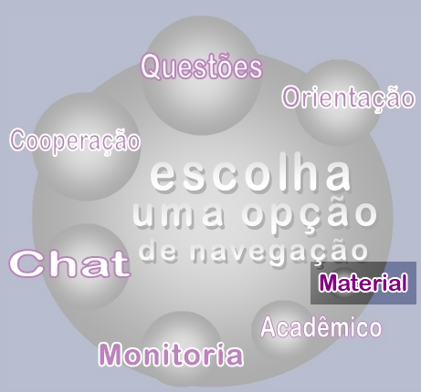
Na barra lateral, clique na opção "Materiais".
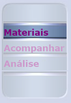
Clique no link "Cadastrar Material".
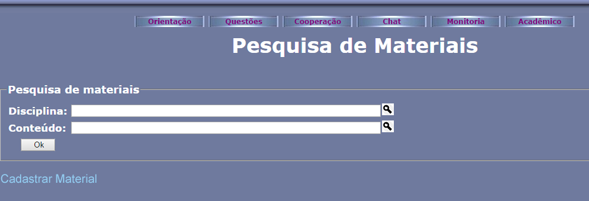
Informe a disciplina e o conteúdo clicando no ícone . Na nova janela, insira o nome ou parte do nome para pesquisa e clique em "OK". Escolha a opção de disciplina e conteúdo referente ao material cadastrado clicando no ícone .
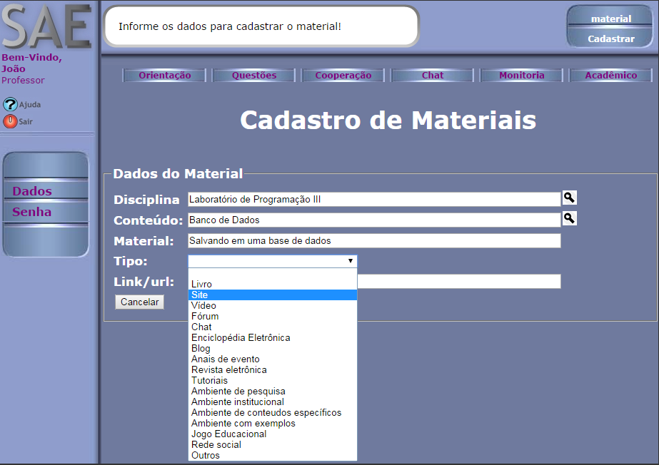
Preencha os outro campos e clique no botão "Cadastrar".
Para alterar Material é preciso estar conectado ao SAE. Caso não
saiba como,
clique aqui
.
No menu principal, clique em "Material".
Na barra lateral, clique na opção "Materiais".
Selecione a disciplina e o conteúdo dos materiais que deseja consultar clicando no ícone . Após selecionar os dois, clique em "OK".
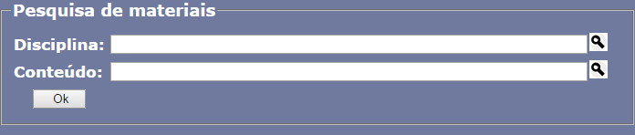
Será apresentada a listagem dos materiais cadastrados no respectivo conteúdo. Selecione o material que deseja alterar clicando no ícone .
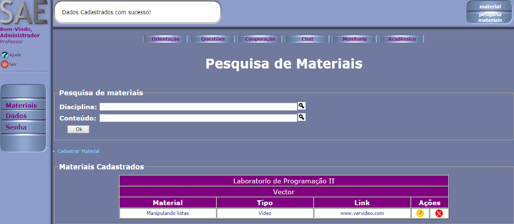
Na nova tela, será exibido os dados sobre o material. Edite os campos que desejar, exceto a Disciplina e o Conteúdo a qual ele pertence. Ao finalizar, clique em "Alterar".
Para excluir Material é preciso estar conectado ao SAE. Caso não
saiba como,
clique aqui
.
No menu principal, clique em "Material".
Na barra lateral, clique na opção "Materiais".
Selecione a Disciplina e o Conteúdo a quem o material está vinculado clicando no ícone , e clique em OK.
Será apresentada uma lista de materiais cadastrados no respectivo conteúdo. Selecione o material que deseja excluir clicando no ícone .
Na nova tela, uma confirmação da exclusão será exibida. Verifique se é o material correto a ser deletado. Caso a resposta seja afirmativa e queira deletar o material, clique no ícone , caso contrário, pressione o botão "Cancelar".
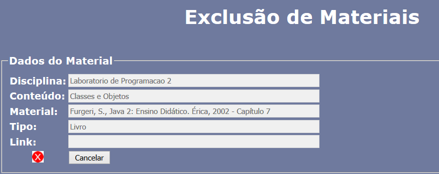
Outra opção presente no Sistema de Recomendação no SAE é
Acompanhar o Estilo de Aprendizagem de cada aluno matriculado na turma.
Confira abaixo o passo a passo de como realizar o acompanhamento:
Para acompanhar um aluno é preciso estar conectado ao SAE. Caso não
saiba como, clique aqui.
No menu principal, clique em "Material".
Na barra lateral, clique na opção "Acompanhar".
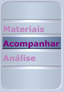
Selecione a turma que deseja acompanhar clicando no ícone , e clique em OK.
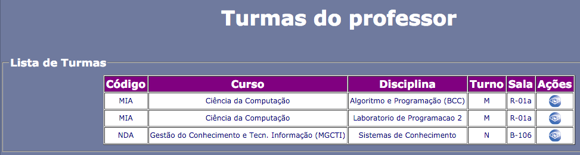
Será apresentada uma lista com todos os alunos da turma selecionada, podendo observar algumas informações sobre o aluno, inclusive o seu Estilo de Aprendizagem.
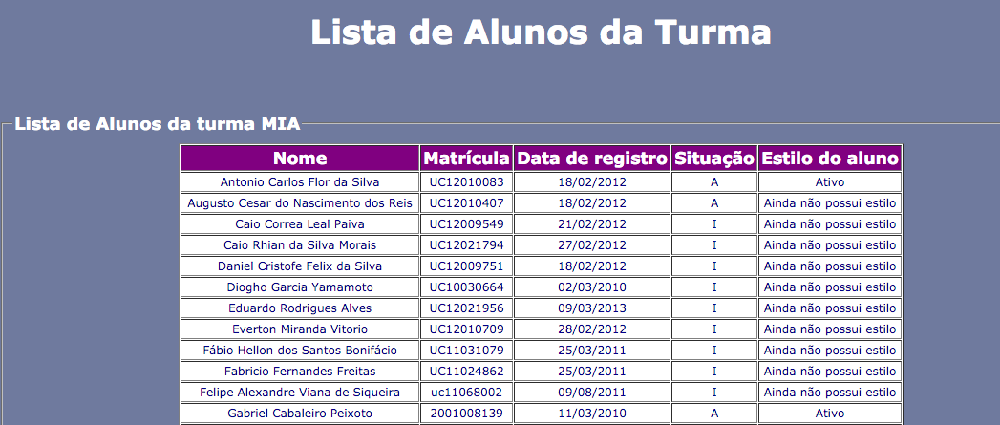
Por fim, existe a opção de ver a quantidade de materiais cadastrados para determinada disciplina ou determinado conteúdo, ou se o material cadastrado pelos professores está sendo útil ou sendo bem avaliados pelos alunos. Essas possibilidades estão presentes na opção Análise, e o tutorial de como realizá-las segue abaixo:
Para visualizar as avaliações, é preciso estar conectado ao SAE. Caso não
saiba como, clique aqui.
No menu principal, clique em "Material".
Na barra lateral, clique na opção "Análise".
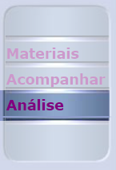
Será apresentada uma lista de disciplinas lecionadas pelo professor. Selecione a disciplina clicando no correspondente.
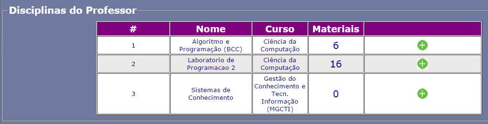
Será apresentada uma lista com os conteúdos da disciplina, mostrando a quantidade de materiais cadastrados para cada conteúdo, quantos foram visualizados pelos alunos e quantos receberam avaliações. Selecione o conteúdo clicando em .
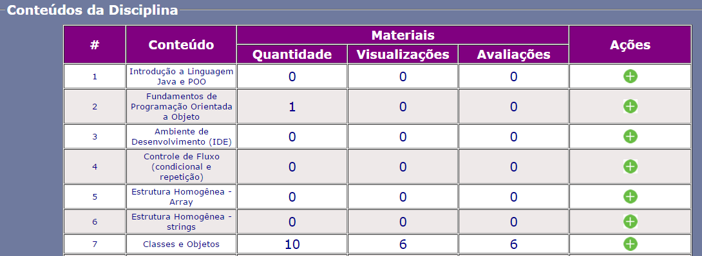
Será apresentada uma análise da quantidade de materiais disponibilizados por cada professor para aquele determinado conteúdo. Selecione o conteúdo clicando em .
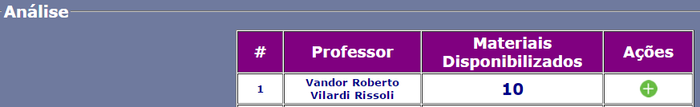
Em seguida, será apresentada uma análise dos materiais disponibilizados para o conteúdo, identificando qual o material, o tipo de mídia, quantas visualizações e avaliações o material obteve e a sua classificação média.
Para visualizar a quantidade de materiais para um conteúdo é preciso estar conectado ao SAE. Caso não
saiba como, clique aqui.
No menu principal, clique em "Material".
Na barra lateral, clique na opção "Análise".
Será apresentada uma lista de disciplinas lecionadas pelo professor e a respectiva quantidade de materiais cadastrados em cada Disciplina. Selecione a disciplina clicando no correspondente.
Será apresentada uma lista com os conteúdos da disciplina, mostrando a quantidade de materiais cadastrados para cada conteúdo, quantos foram visualizados pelos alunos e quantos receberam avaliações.
 .
.  .
.